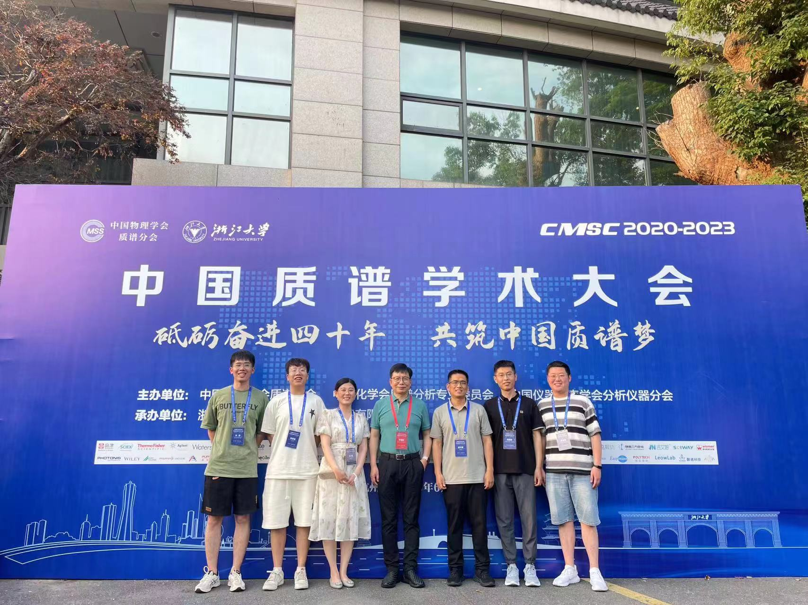
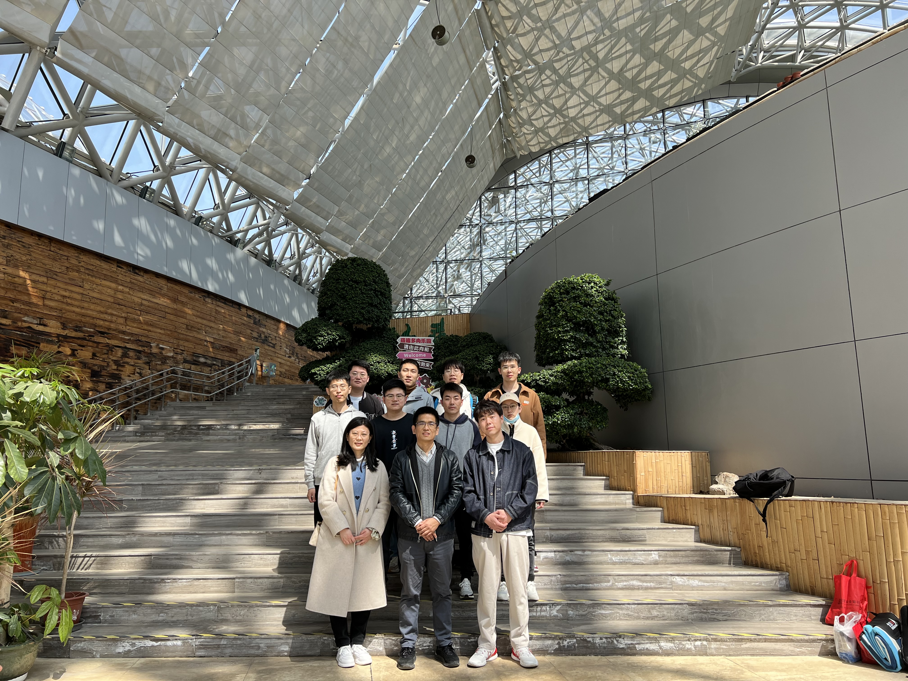

34334
环境安全在线质谱与装备实验室
山东大学侯可勇教授课题组
中文
|
English
首页
课题组新闻
研究方向
质谱仪器
团队介绍
成果及论文
奖励与荣誉
组内活动
联系我们
Leader 侯可勇
博士 教授
环境安全与在线质谱与装备实验室
侯可勇，男，中共党员，博士，教授，博士生导师。主要针对环境污染物实时分析、国家安全需求，从事在线检测质谱新仪器、新方法的研究。作为课题负责人先后主持国家自然科学基金项目4项，国家重大仪器专项课题1项，国家重大研发计划子课题1项，国家"863"资环领域子课题1项，中科院仪器研制项目1项，辽宁省自然科学基金2项。在分析化学、环境领域主流期刊已发表SCI论文70余篇，获得授权的发明专利22项。
研究方向
更多 >
1.环境污染物现场应急检测新技术及新方法开发和应用； 2.大气自由基及成核关键物种探测新技术及新方法研究； 3.挥发性有机物在线监测及其二次污染机理研究； 4.质谱微型化技术及其在国家安全分析中的应用研究。
课题组新闻
更多 >
恭喜厉梅博士荣获山东大学优秀博士后二等奖
张永磊在《Trends in Analytical Chemistry》发表了题目为“Chemical ionization mass spectrometry: Developments and applications for on-line characterization of atmospheric aerosols and trace gases"的综述文章。
张永磊在《Journal of Environmental Science》期刊发表了题目为"A dopant-assisted iodide-adduct chemical ionization time-of-flight mass spectrometer based on VUV lamp photoionization for atmospheric low-molecular-weight organic acids analysis"的研究文章。
刘瑞东在《Molecules》期刊发表了题目为“Development and Application of a Chemical Ionization Focusing Integrated Ionization Source TOFMS for Online Detection of OVOCs in the Atmosphere"研究文章。
恭喜王振名博士成功申请山东大学特别资助类博士后。
恭喜刘瑞东发明专利成功授权！
党敏在《Environment Science and Technology》发表了题目为“Vacuum ultraviolet photoionization on-line mass spectrometry: Instrumentation developments and applications"的研究文章。
党敏在《Trends in Analytical Chemistry》发表了题目为“Vacuum ultraviolet photoionization on-line mass spectrometry: Instrumentation developments and applications"的综述文章。
厉梅在《Talanta》发表了题目为“On-site leakage locating of underground natural gas pipeline based on Ne tracer by miniature time-of-flight mass spectrometry"的研究文章。
李静在《Talanta》发表了题目为“A homogeneous sampling membrane inlet photoelectron ionization miniature time-of-flight mass spectrometer for on-line determination of ethane"的研究文章。
董丰硕在《Journal of Environmental Science》期刊发表了题目为"Protonated acetone ion chemical ionization time-of-flight mass spectrometry for real-time measurement of atmospheric ammonia"的研究文章。
刘兵在《Analyst》发表了题目为“Point-of-care detection of sevoflurane anesthetics in exhaled breath using a miniature TOFMS for diagnosis of postoperative agitation symptoms in children"的研究文章。
组内活动
更多 >
2023夏，欢送第二届毕业生

2023夏，杭州质谱大会

2023春游-世博园游览
2022秋游-八大关游览
友情链接
山东大学
广西电网
云南边防
盈峰科技
北京理工大学
北京防化研究院